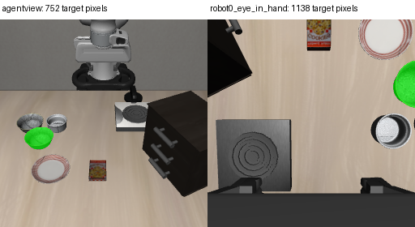
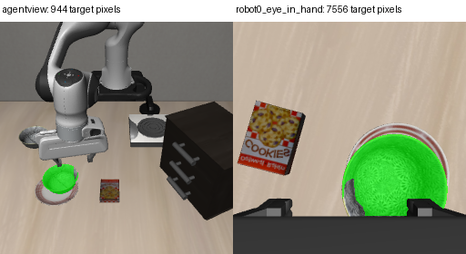
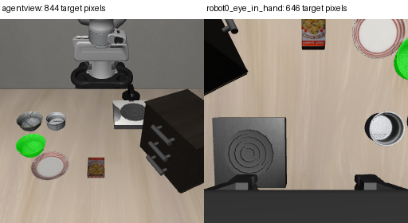
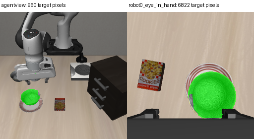
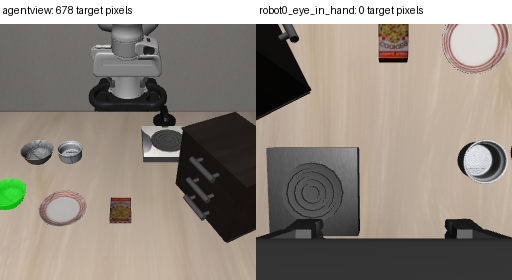
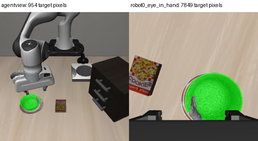
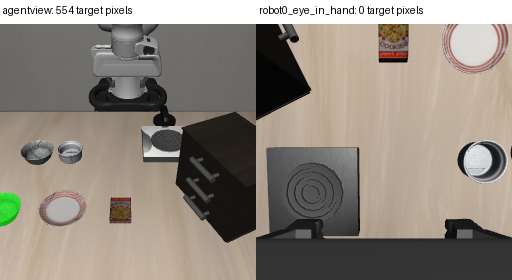
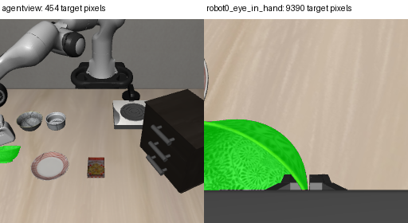

原模型实际运行录像；没有改动作、重训或动当前窗口。绿色只在诊断截图标出目标碗，不是模型输入。视频10FPS按控制步播放，不等于墙钟时间。当前只有复核结论，没有行为修复。
偏移X=-8.46cm，Y=-4.83cm；800步；结束原因step_limit；平均间隔0.124秒。


偏移X=-2.73cm，Y=-3.11cm；426步；结束原因stable_release_complete；平均间隔0.123秒。


偏移X=2.06cm，Y=5.32cm；270步；结束原因reset；平均间隔0.124秒。


偏移X=7.94cm，Y=5.32cm；800步；结束原因step_limit；平均间隔0.124秒。


相机视野差异不等于已证明因果；scene6起始腕部也无目标但后续On；scene4双摄初始有目标仍缓慢。末状态接触不是运行全过程接触历史。